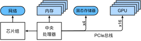
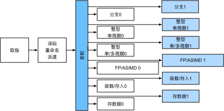
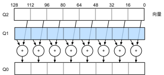
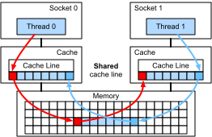
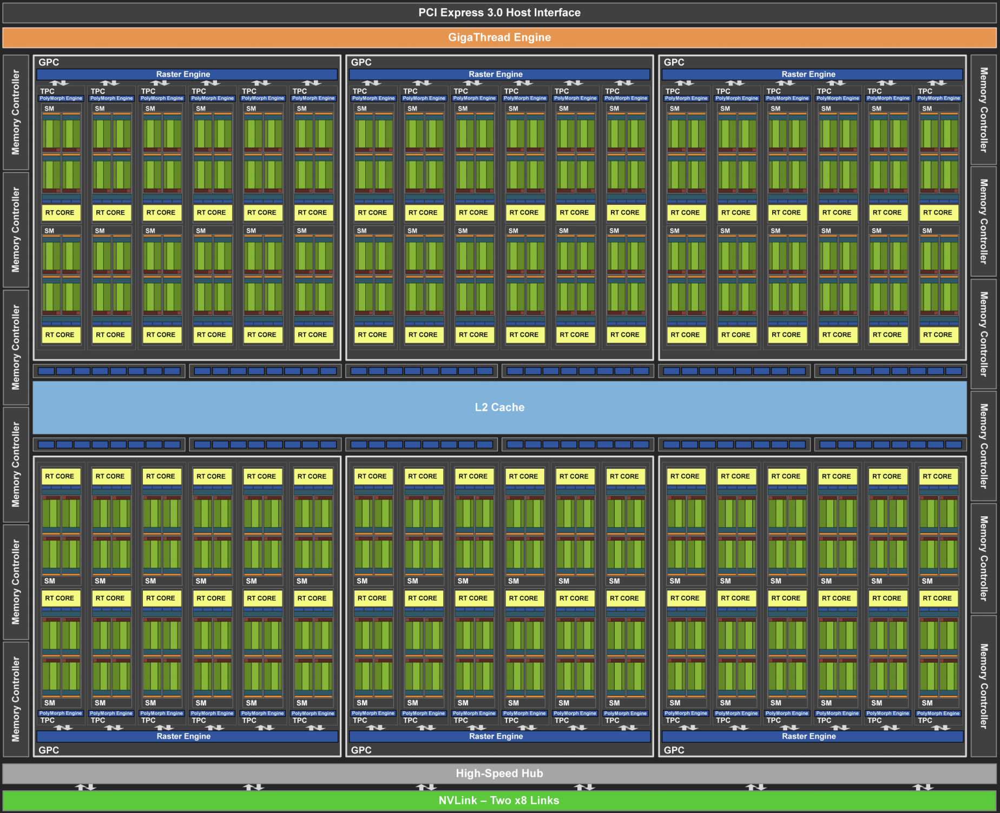

硬件
:label:sec_hardware
很好地理解算法和模型才可以捕获统计方面的问题，构建出具有出色性能的系统。同时，至少对底层硬件有一定的了解也是必不可少的。本节不能替代硬件和系统设计的相关课程。相反，本节的内容可以作为理解某些算法为什么比其他算法更高效以及如何实现良好吞吐量的起点。一个好的设计可以很容易地在性能上造就数量级的差异，这也是后续产生的能够训练网络（例如，训练时间为$1$周）和无法训练网络（训练时间为$3$个月，导致错过截止期）之间的差异。我们先从计算机的研究开始。然后深入查看CPU和GPU。最后，再查看数据中心或云中的多台计算机的连接方式。
 :label:
:label:fig_latencynumbers
也可以通过 :numref:fig_latencynumbers进行简单的了解，图片源自科林·斯科特的互动帖子，在帖子中很好地概述了过去十年的进展。原始的数字是取自于杰夫迪恩的Stanford讲座。下面的讨论解释了这些数字的一些基本原理，以及它们如何指导我们去设计算法。下面的讨论是非常笼统和粗略的。很显然，它并不能代替一门完整的课程，而只是为了给统计建模者提供足够的信息，让他们做出合适的设计决策。对于计算机体系结构的深入概述，建议读者参考 :cite:Hennessy.Patterson.2011或关于该主题的最新课程，例如Arste Asanovic。
计算机
大多数深度学习研究者和实践者都可以使用一台具有相当数量的内存、计算资源、某种形式的加速器（如一个或者多个GPU）的计算机。计算机由以下关键部件组成：
- 一个处理器（也被称为CPU），它除了能够运行操作系统和许多其他功能之外，还能够执行给定的程序。它通常由$8$个或更多个核心组成；
- 内存（随机访问存储，RAM）用于存储和检索计算结果，如权重向量和激活参数，以及训练数据；
- 一个或多个以太网连接，速度从1GB/s到100GB/s不等。在高端服务器上可能用到更高级的互连；
- 高速扩展总线（PCIe）用于系统连接一个或多个GPU。服务器最多有$8$个加速卡，通常以更高级的拓扑方式连接，而桌面系统则有$1$个或$2$个加速卡，具体取决于用户的预算和电源负载的大小；
- 持久性存储设备，如磁盘驱动器、固态驱动器，在许多情况下使用高速扩展总线连接。它为系统需要的训练数据和中间检查点需要的存储提供了足够的传输速度。

:label:fig_mobo-symbol
如 :numref:fig_mobo-symbol所示，高速扩展总线由直接连接到CPU的多个通道组成，将CPU与大多数组件（网络、GPU和存储）连接在一起。例如，AMD的Threadripper3有$64$个PCIe4.0通道，每个通道都能够双向传输16Gbit/s的数据。内存直接连接到CPU，总带宽高达100GB/s。
当我们在计算机上运行代码时，需要将数据转移到处理器上（CPU或GPU）执行计算，然后将结果从处理器移回到随机访问存储和持久存储器中。因此，为了获得良好的性能，需要确保每一步工作都能无缝链接，而不希望系统中的任何一部分成为主要的瓶颈。例如，如果不能快速加载图像，那么处理器就无事可做。同样地，如果不能快速移动矩阵到CPU（或GPU）上，那么CPU（或GPU）就会无法全速运行。最后，如果希望在网络上同步多台计算机，那么网络就不应该拖累计算速度。一种选择是通信和计算交错进行。接下来将详细地介绍各个组件。
内存
最基本的内存主要用于存储需要随时访问的数据。目前，CPU的内存通常为DDR4类型，每个模块提供20-25Gb/s的带宽。每个模块都有一条$64$位宽的总线。通常使用成对的内存模块来允许多个通道。CPU有$2$到$4$个内存通道，也就是说，它们内存带宽的峰值在40GB/s到100GB/s之间。一般每个通道有两个物理存储体（bank）。例如AMD的Zen 3 Threadripper有$8$个插槽。
虽然这些数字令人印象深刻，但实际上它们只能说明了一部分故事。当我们想要从内存中读取一部分内容时，需要先告诉内存模块在哪里可以找到信息。也就是说，我们需要先将地址（address）发送到RAM。然后我们可以选择只读取一条$64$位记录还是一长串记录。后者称为突发读取（burst read）。概括地说，向内存发送地址并设置传输大约需要100ns（细节取决于所用内存芯片的特定定时系数），每个后续传输只需要0.2ns。总之，第一次读取的成本是后续读取的500倍！请注意，每秒最多可以执行一千万次随机读取。这说明应该尽可能地避免随机内存访问，而是使用突发模式读取和写入。
当考虑到拥有多个物理存储体时，事情就更加复杂了。每个存储体大部分时候都可以独立地读取内存。这意味着两件事。一方面，如果随机读操作均匀分布在内存中，那么有效的随机读操作次数将高达4倍。这也意味着执行随机读取仍然不是一个好主意，因为突发读取的速度也快了4倍。另一方面，由于内存对齐是$64$位边界，因此最好将任何数据结构与相同的边界对齐。当设置了适当的标志时，编译器基本上就是自动化地执行对齐操作。我们鼓励好奇的读者回顾一下Zeshan Chishti关于DRAM的讲座。
GPU内存的带宽要求甚至更高，因为它们的处理单元比CPU多得多。总的来说，解决这些问题有两种选择。首先是使内存总线变得更宽。例如，NVIDIA的RTX 2080Ti有一条352位宽的总线。这样就可以同时传输更多的信息。其次，GPU使用特定的高性能内存。消费级设备，如NVIDIA的RTX和Titan系列，通常使用GDDR6模块。它们使用截然不同的接口，直接与专用硅片上的GPU连接。这使得它们非常昂贵，通常仅限于高端服务器芯片，如NVIDIA Volta V100系列加速卡。毫不意外的是GPU的内存通常比CPU的内存小得多，因为前者的成本更高。就目的而言，它们的性能与特征大体上是相似的，只是GPU的速度更快。就本书而言，我们完全可以忽略细节，因为这些技术只在调整GPU核心以获得高吞吐量时才起作用。
存储器
随机访问存储的一些关键特性是 带宽（bandwidth）和 延迟（latency）。存储设备也是如此，只是不同设备之间的特性差异可能更大。
硬盘驱动器
硬盘驱动器（hard disk drive，HDD）已经使用了半个多世纪。简单的说，它们包含许多旋转的盘片，这些盘片的磁头可以放置在任何给定的磁道上进行读写。高端磁盘在$9$个盘片上可容纳高达16TB的容量。硬盘的主要优点之一是相对便宜，而它们的众多缺点之一是典型的灾难性故障模式和相对较高的读取延迟。
要理解后者，请了解一个事实即硬盘驱动器的转速大约为7200RPM（每分钟转数）。它们如果转速再快些，就会由于施加在碟片上的离心力而破碎。在访问磁盘上的特定扇区时，还有一个关键问题：需要等待碟片旋转到位（可以移动磁头，但是无法对磁盘加速）。因此，可能需要$8$毫秒才能使用请求的数据。一种常见的描述方式是，硬盘驱动器可以以大约100IOPs（每秒输入/输出操作）的速度工作，并且在过去二十年中这个数字基本上没变。同样糟糕的是，带宽（大约为100-200MB/s）也很难增加。毕竟，每个磁头读取一个磁道的比特，因此比特率只随信息密度的平方根缩放。因此，对于非常大的数据集，HDD正迅速降级为归档存储和低级存储。
固态驱动器
固态驱动器（solid state drives，SSD）使用闪存持久地存储信息。这允许更快地访问存储的记录。现代的固态驱动器的IOPs可以达到$10$万到$50$万，比硬盘驱动器快3个数量级。而且，它们的带宽可以达到1-3GB/s，比硬盘驱动器快一个数量级。这些改进听起来好的难以置信，而事实上受固态驱动器的设计方式，它仍然存在下面的附加条件。
- 固态驱动器以块的方式（256KB或更大）存储信息。块只能作为一个整体来写入，因此需要耗费大量的时间，导致固态驱动器在按位随机写入时性能非常差。而且通常数据写入需要大量的时间还因为块必须被读取、擦除，然后再重新写入新的信息。如今固态驱动器的控制器和固件已经开发出了缓解这种情况的算法。尽管有了算法，写入速度仍然会比读取慢得多，特别是对于QLC（四层单元）固态驱动器。提高性能的关键是维护操作的“队列”，在队列中尽可能地优先读取和写入大的块。
- 固态驱动器中的存储单元磨损得比较快（通常在几千次写入之后就已经老化了）。磨损程度保护算法能够将退化平摊到许多单元。也就是说，不建议将固态驱动器用于交换分区文件或大型日志文件。
- 最后，带宽的大幅增加迫使计算机设计者将固态驱动器与PCIe总线相连接，这种驱动器称为NVMe（非易失性内存增强），其最多可以使用$4$个PCIe通道。在PCIe4.0上最高可达8GB/s。
云存储
云存储提供了一系列可配置的性能。也就是说，虚拟机的存储在数量和速度上都能根据用户需要进行动态分配。建议用户在延迟太高时（例如，在训练期间存在许多小记录时）增加IOPs的配置数。
CPU
中央处理器（central processing unit，CPU）是任何计算机的核心。它们由许多关键组件组成：处理器核心（processor cores）用于执行机器代码的；总线（bus）用于连接不同组件（注意，总线会因为处理器型号、各代产品和供应商之间的特定拓扑结构有明显不同）；缓存（cach）相比主内存实现更高的读取带宽和更低的延迟内存访问。最后，因为高性能线性代数和卷积运算常见于媒体处理和机器学习中，所以几乎所有的现代CPU都包含向量处理单元（vector processing unit）为这些计算提供辅助。
 :label:
:label:fig_skylake
:numref:fig_skylake描述了Intel Skylake消费级四核CPU。它包含一个集成GPU、缓存和一个连接四个核心的环总线。例如，以太网、WiFi、蓝牙、SSD控制器和USB这些外围设备要么是芯片组的一部分，要么通过PCIe直接连接到CPU。
微体系结构
每个处理器核心都由一组相当复杂的组件组成。虽然不同时代的产品和供应商的细节有所不同，但基本功能都是标准的。前端加载指令并尝试预测将采用哪条路径（例如，为了控制流），然后将指令从汇编代码解码为微指令。汇编代码通常不是处理器执行的最低级别代码，而复杂的微指令却可以被解码成一组更低级的操作，然后由实际的执行核心处理。通常执行核心能够同时执行许多操作，例如， :numref:fig_cortexa77的ARM Cortex A77核心可以同时执行多达$8$个操作。

:label:fig_cortexa77
这意味着高效的程序可以在每个时钟周期内执行多条指令，前提是这些指令可以独立执行。不是所有的处理单元都是平等的。一些专用于处理整数指令，而另一些则针对浮点性能进行了优化。为了提高吞吐量，处理器还可以在分支指令中同时执行多条代码路径，然后丢弃未选择分支的结果。这就是为什么前端的分支预测单元很重要，因为只有最有希望的路径才会被继续执行。
矢量化
深度学习的计算量非常大。因此，为了满足机器学习的需要，CPU需要在一个时钟周期内执行许多操作。这种执行方式是通过向量处理单元实现的。这些处理单元有不同的名称:在ARM上叫做NEON,在x86上被称为AVX2。一个常见的功能是它们能够执行单指令多数据（single instruction multiple data，SIMD）操作。 :numref:fig_neon128显示了如何在ARM上的一个时钟周期中完成$8$个整数加法。

:label:fig_neon128
根据体系结构的选择，此类寄存器最长可达$512$位，最多可组合$64$对数字。例如，我们可能会将两个数字相乘，然后与第三个数字相加，这也称为乘加融合（fused multiply-add）。Intel的OpenVino就是使用这些处理器来获得可观的吞吐量，以便在服务器级CPU上进行深度学习。不过请注意，这个数字与GPU的能力相比则相形见绌。例如，NVIDIA的RTX 2080Ti拥有$4352$个CUDA核心，每个核心都能够在任何时候处理这样的操作。
缓存
考虑以下情况：我们有一个中等规模的$4$核心的CPU，如 :numref:fig_skylake所示，运行在2GHz频率。此外，假设向量处理单元启用了$256$位带宽的AVX2，其IPC（指令/时钟）计数为1。进一步假设从内存中获取用于AVX2操作的指令至少需要一个寄存器。这意味着CPU每个时钟周期需要消耗$4 \times 256 \text{ bit} = 128 \text{ bytes}$的数据。除非我们能够每秒向处理器传输$2 \times 10^9 \times 128 = 256 \times 10^9$字节，否则用于处理的数据将会不足。不幸的是，这种芯片的存储器接口仅支持20-40Gb/s的数据传输，即少了一个数量级。解决方法是尽可能避免从内存中加载新数据，而是将数据放在CPU的缓存上。这就是使用缓存的地方。通常使用以下名称或概念。
- 寄存器，严格来说不是缓存的一部分，用于帮助组织指令。也就是说，寄存器是CPU可以以时钟速度访问而没有延迟的存储位置。CPU有几十个寄存器，因此有效地使用寄存器取决于编译器（或程序员）。例如，C语言有一个
register关键字。 - 一级缓存是应对高内存带宽要求的第一道防线。一级缓存很小（常见的大小可能是32-64KB），内容通常分为数据和指令。当数据在一级缓存中被找到时，其访问速度非常快，如果没有在那里找到，搜索将沿着缓存层次结构向下寻找。
- 二级缓存是下一站。根据架构设计和处理器大小的不同，它们可能是独占的也可能是共享的。即它们可能只能由给定的核心访问，或者在多个核心之间共享。二级缓存比一级缓存大（通常每个核心256-512KB），而速度也更慢。此外，我们首先需要检查以确定数据不在一级缓存中，才会访问二级缓存中的内容，这会增加少量的额外延迟。
- 三级缓存在多个核之间共享，并且可以非常大。AMD的EPYC 3服务器的CPU在多个芯片上拥有高达256MB的高速缓存。更常见的数字在4-8MB范围内。
预测下一步需要哪个存储设备是优化芯片设计的关键参数之一。例如，建议以向前的方向遍历内存，因为大多数缓存算法将试图向前读取（read forward）而不是向后读取。同样，将内存访问模式保持在本地也是提高性能的一个好方法。
添加缓存是一把双刃剑。一方面，它能确保处理器核心不缺乏数据。但同时，它也增加了芯片尺寸，消耗了原本可以用来提高处理能力的面积。此外，缓存未命中的代价可能会很昂贵。考虑最坏的情况，如 :numref:fig_falsesharing所示的错误共享（false sharing）。当处理器$1$上的线程请求数据时，内存位置缓存在处理器$0$上。为了满足获取需要，处理器$0$需要停止它正在做的事情，将信息写回主内存，然后让处理器$1$从内存中读取它。在此操作期间，两个处理器都需要等待。与高效的单处理器实现相比，这种代码在多个处理器上运行的速度可能要慢得多。这就是为什么缓存大小（除了物理大小之外）有实际限制的另一个原因。

:label:fig_falsesharing
GPU和其他加速卡
毫不夸张地说，如果没有GPU，深度学习就不会成功。基于同样的原因，有理由认为GPU制造商的财富由于深度学习而显著增加。这种硬件和算法的协同进化导致了这样一种情况：无论好坏，深度学习都是更可取的统计建模范式。因此，了解GPU和其他加速卡（如TPU :cite:Jouppi.Young.Patil.ea.2017）的具体好处是值得的。
值得注意的是，在实践中经常会有这样一个判别：加速卡是为训练还是推断而优化的。对于后者，我们只需要计算网络中的前向传播。而反向传播不需要存储中间数据。还有，我们可能不需要非常精确的计算（FP16或INT8通常就足够了）。对于前者，即训练过程中需要存储所有的中间结果用来计算梯度。而且，累积梯度也需要更高的精度，以避免数值下溢（或溢出）。这意味着最低要求也是FP16（或FP16与FP32的混合精度）。所有这些都需要更快、更大的内存（HBM2或者GDDR6）和更高的处理能力。例如，NVIDIA优化了Turing T4 GPU用于推断和V100 GPU用于训练。
回想一下如 :numref:fig_neon128所示的矢量化。处理器核心中添加向量处理单元可以显著提高吞吐量。例如，在 :numref:fig_neon128的例子中，我们能够同时执行$16$个操作。首先，如果我们添加的运算不仅优化了向量运算，而且优化了矩阵运算，会有什么好处？稍后我们将讨论基于这个策略引入的张量核（tensor cores）。第二，如果我们增加更多的核心呢？简而言之，以上就是GPU设计决策中的两种策略。 :numref:fig_turing_processing_block给出了基本处理块的概述。它包含$16$个整数单位和$16$个浮点单位。除此之外，两个张量核加速了与深度学习相关的附加操作的狭窄的子集。每个流式多处理器都由这样的四个块组成。
 :width:
:width:150px
:label:fig_turing_processing_block
接下来，将$12$个流式多处理器分组为图形处理集群，这些集群构成了高端TU102处理器。充足的内存通道和二级缓存完善了配置。 :numref:fig_turing有相关的细节。设计这种设备的原因之一是可以根据需要独立地添加或删除模块，从而满足设计更紧凑的芯片和处理良品率问题（故障模块可能无法激活）的需要。幸运的是，在CUDA和框架代码层之下，这类设备的编程对深度学习的临时研究员隐藏得很好。特别是，只要有可用的资源GPU上就可以同时执行多个程序。尽管如此，了解设备的局限性是值得的，以避免对应的设备内存的型号不合适。

:width:350px
:label:fig_turing
最后值得一提的是张量核（tensor core）。它们是最近增加更多优化电路趋势的一个例子，这些优化电路对深度学习特别有效。例如，TPU添加了用于快速矩阵乘法的脉动阵列 :cite:Kung.1988，这种设计是为了支持非常小数量（第一代TPU支持数量为1）的大型操作。而张量核是另一个极端。它们针对$4 \times 4$和$16 \times 16$矩阵之间的小型运算进行了优化，具体取决于它们的数值精度。 :numref:fig_tensorcore给出了优化的概述。
 :width:
:width:400px
:label:fig_tensorcore
显然，我们最终会在优化计算时做出某些妥协。其中之一是GPU不太擅长处理稀疏数据和中断。尽管有一些明显的例外，如Gunrock :cite:Wang.Davidson.Pan.ea.2016，但GPU擅长的高带宽突发读取操作并不适合稀疏的矩阵和向量的访问模式。访问稀疏数据和处理中断这两个目标是一个积极研究的领域。例如：DGL，一个专为图深度学习而设计的库。
网络和总线
每当单个设备不足以进行优化时，我们就需要来回传输数据以实现同步处理，于是网络和总线就派上了用场。我们有许多设计参数：带宽、成本、距离和灵活性。应用的末端有WiFi，它有非常好的使用范围，非常容易使用（毕竟没有线缆），而且还便宜，但它提供的带宽和延迟相对一般。头脑正常的机器学习研究人员都不会用它来构建服务器集群。接下来的内容中将重点关注适合深度学习的互连方式。
- PCIe，一种专用总线，用于每个通道点到点连接的高带宽需求（在$16$通道插槽中的PCIe4.0上高达32GB/s），延迟时间为个位数的微秒（5μs）。PCIe链接非常宝贵。处理器拥有的数量：AMD的EPYC 3有$128$个通道，Intel的Xeon每个芯片有$48$个通道；在桌面级CPU上，数字分别是$20$（Ryzen9）和$16$（Core i9）。由于GPU通常有$16$个通道，这就限制了以全带宽与CPU连接的GPU数量。毕竟，它们还需要与其他高带宽外围设备（如存储和以太网）共享链路。与RAM访问一样，由于减少了数据包的开销，因此更适合大批量数据传输。
- 以太网，连接计算机最常用的方式。虽然它比PCIe慢得多，但它的安装成本非常低，而且具有很强的弹性，覆盖的距离也要长得多。低级服务器的典型带宽为1GBit/s。高端设备（如云中的C5实例。这进一步增加了开销。与PCIe类似，以太网旨在连接两个设备，例如计算机和交换机。
- 交换机，一种连接多个设备的方式，该连接方式下的任何一对设备都可以同时执行（通常是全带宽）点对点连接。例如，以太网交换机可能以高带宽连接$40$台服务器。请注意，交换机并不是传统计算机网络所独有的。甚至PCIe通道也可以是可交换的，例如：P2实例就是将大量GPU连接到主机处理器。
- NVLink，是PCIe的替代品，适用于非常高带宽的互连。它为每条链路提供高达300Gbit/s的数据传输速率。服务器GPU（Volta V100）有六个链路。而消费级GPU（RTX 2080Ti）只有一个链路，运行速度也降低到100Gbit/s。建议使用NCCL来实现GPU之间的高速数据传输。
更多延迟
:numref:table_latency_numbers和 :numref:table_latency_numbers_tesla中的小结来自Eliot Eshelman，他们将数字的更新版本保存到GitHub gist。
:常见延迟。
| Action | Time | Notes |
|---|---|---|
| L1 cache reference/hit | 1.5 ns | 4 cycles |
| Floating-point add/mult/FMA | 1.5 ns | 4 cycles |
| L2 cache reference/hit | 5 ns | 12 ~ 17 cycles |
| Branch mispredict | 6 ns | 15 ~ 20 cycles |
| L3 cache hit (unshared cache) | 16 ns | 42 cycles |
| L3 cache hit (shared in another core) | 25 ns | 65 cycles |
| Mutex lock/unlock | 25 ns | |
| L3 cache hit (modified in another core) | 29 ns | 75 cycles |
| L3 cache hit (on a remote CPU socket) | 40 ns | 100 ~ 300 cycles (40 ~ 116 ns) |
| QPI hop to a another CPU (per hop) | 40 ns | |
| 64MB memory ref. (local CPU) | 46 ns | TinyMemBench on Broadwell E5-2690v4 |
| 64MB memory ref. (remote CPU) | 70 ns | TinyMemBench on Broadwell E5-2690v4 |
| 256MB memory ref. (local CPU) | 75 ns | TinyMemBench on Broadwell E5-2690v4 |
| Intel Optane random write | 94 ns | UCSD Non-Volatile Systems Lab |
| 256MB memory ref. (remote CPU) | 120 ns | TinyMemBench on Broadwell E5-2690v4 |
| Intel Optane random read | 305 ns | UCSD Non-Volatile Systems Lab |
| Send 4KB over 100 Gbps HPC fabric | 1 μs | MVAPICH2 over Intel Omni-Path |
| Compress 1KB with Google Snappy | 3 μs | |
| Send 4KB over 10 Gbps ethernet | 10 μs | |
| Write 4KB randomly to NVMe SSD | 30 μs | DC P3608 NVMe SSD (QOS 99% is 500μs) |
| Transfer 1MB to/from NVLink GPU | 30 μs | ~33GB/s on NVIDIA 40GB NVLink |
| Transfer 1MB to/from PCI-E GPU | 80 μs | ~12GB/s on PCIe 3.0 x16 link |
| Read 4KB randomly from NVMe SSD | 120 μs | DC P3608 NVMe SSD (QOS 99%) |
| Read 1MB sequentially from NVMe SSD | 208 μs | ~4.8GB/s DC P3608 NVMe SSD |
| Write 4KB randomly to SATA SSD | 500 μs | DC S3510 SATA SSD (QOS 99.9%) |
| Read 4KB randomly from SATA SSD | 500 μs | DC S3510 SATA SSD (QOS 99.9%) |
| Round trip within same datacenter | 500 μs | One-way ping is ~250μs |
| Read 1MB sequentially from SATA SSD | 2 ms | ~550MB/s DC S3510 SATA SSD |
| Read 1MB sequentially from disk | 5 ms | ~200MB/s server HDD |
| Random Disk Access (seek+rotation) | 10 ms | |
| Send packet CA->Netherlands->CA | 150 ms |
:label:table_latency_numbers
:NVIDIA Tesla GPU的延迟.
| Action | Time | Notes |
|---|---|---|
| GPU Shared Memory access | 30 ns | 30~90 cycles (bank conflicts add latency) |
| GPU Global Memory access | 200 ns | 200~800 cycles |
| Launch CUDA kernel on GPU | 10 μs | Host CPU instructs GPU to start kernel |
| Transfer 1MB to/from NVLink GPU | 30 μs | ~33GB/s on NVIDIA 40GB NVLink |
| Transfer 1MB to/from PCI-E GPU | 80 μs | ~12GB/s on PCI-Express x16 link |
:label:table_latency_numbers_tesla
小结
- 设备有运行开销。因此，数据传输要争取量大次少而不是量少次多。这适用于RAM、固态驱动器、网络和GPU。
- 矢量化是性能的关键。确保充分了解加速器的特定功能。例如，一些Intel Xeon CPU特别适用于INT8操作，NVIDIA Volta GPU擅长FP16矩阵操作，NVIDIA Turing擅长FP16、INT8和INT4操作。
- 在训练过程中数据类型过小导致的数值溢出可能是个问题（在推断过程中则影响不大）。
- 数据混叠现象会导致严重的性能退化。$64$位CPU应该按照$64$位边界进行内存对齐。在GPU上建议保持卷积大小对齐，例如：与张量核对齐。
- 将算法与硬件相匹配（例如，内存占用和带宽）。将命中参数装入缓存后，可以实现很大数量级的加速比。
- 在验证实验结果之前，建议先在纸上勾勒出新算法的性能。关注的原因是数量级及以上的差异。
- 使用调试器跟踪调试寻找性能的瓶颈。
- 训练硬件和推断硬件在性能和价格方面有不同的优点。
练习
- 编写C语言来测试访问对齐的内存和未对齐的内存之间的速度是否有任何差异。（提示：小心缓存影响。）
- 测试按顺序访问或按给定步幅访问内存时的速度差异。
- 如何测量CPU上的缓存大小？
- 如何在多个内存通道中分配数据以获得最大带宽？如果有许多小的线程，会怎么布置？
- 一个企业级硬盘正在以10000转/分的速度旋转。在最坏的情况下，硬盘读取数据所需的最短时间是多少（假设磁头几乎是瞬间移动的）？为什么2.5英寸硬盘在商用服务器上越来越流行（相对于3.5英寸硬盘和5.25英寸硬盘）？
- 假设HDD制造商将存储密度从每平方英寸1 Tbit增加到每平方英寸5 Tbit。在一个2.5英寸的硬盘上，多少信息能够存储一个环中？内轨和外轨有区别吗？
- 从$8$位数据类型到$16$位数据类型，硅片的数量大约增加了四倍，为什么？为什么NVIDIA会在其图灵GPU中添加INT4运算？
- 在内存中向前读比向后读快多少？该数字在不同的计算机和CPU供应商之间是否有所不同？为什么？编写C代码进行实验。
- 磁盘的缓存大小能否测量？典型的硬盘是多少？固态驱动器需要缓存吗？
- 测量通过以太网发送消息时的数据包开销。查找UDP和TCP/IP连接之间的差异。
- 直接内存访问允许CPU以外的设备直接向内存写入（和读取）。为什么要这样？
- 看看Turing T4GPU的性能数字。为什么从FP16到INT8和INT4的性能只翻倍？
- 一个网络包从旧金山到阿姆斯特丹的往返旅行需要多长时间？提示：可以假设距离为10000公里。